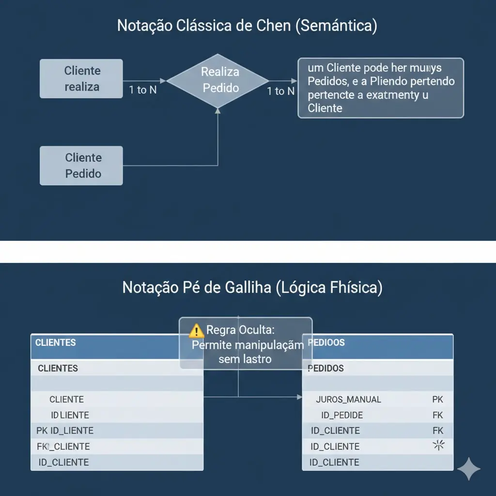
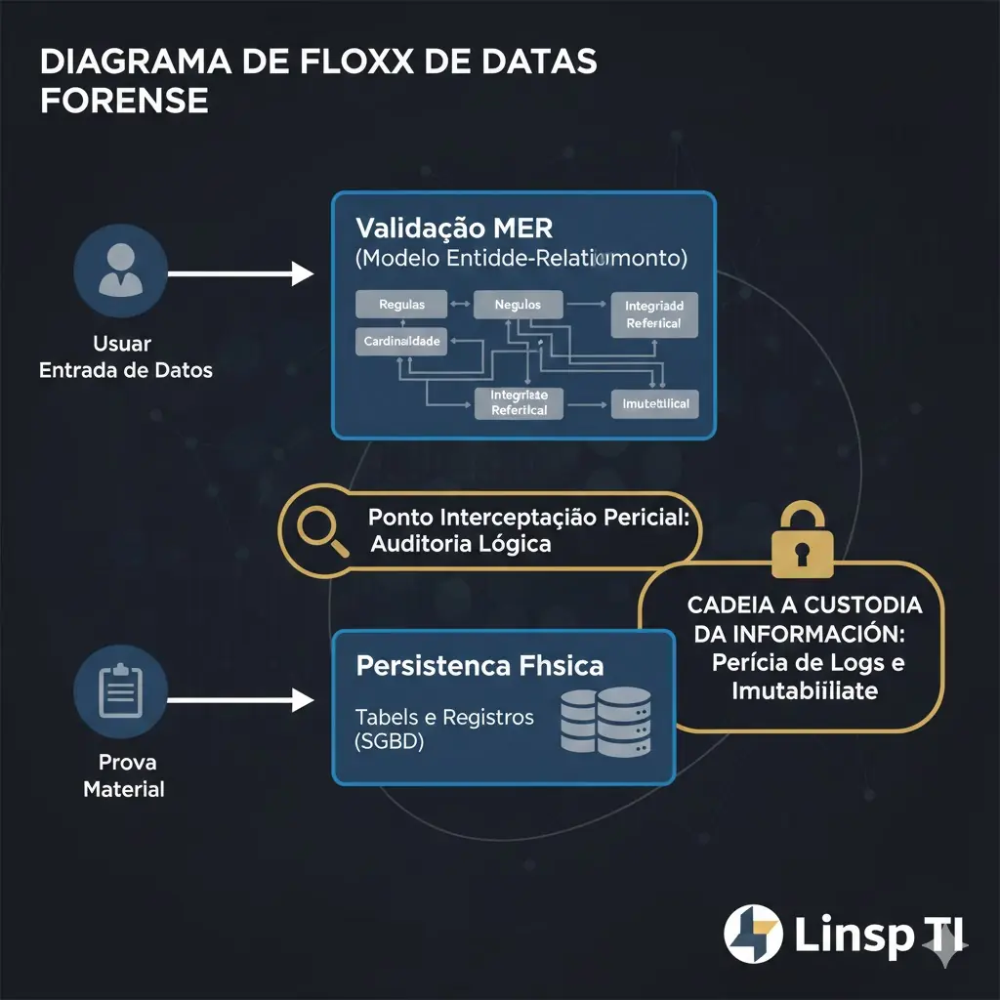

Introdução à Hermenêutica de Dados
A transposição de fatos do mundo real para o ambiente digital não é um processo meramente mecânico, mas sim uma tradução semântica complexa que exige rigor estrutural. No contexto da perícia judicial em Tecnologia da Informação, a análise de um sistema de gestão — seja ele jurídico, financeiro ou administrativo — deve obrigatoriamente iniciar pela desconstrução de sua arquitetura de dados. A modelagem de dados, especificamente no paradigma relacional, funciona como a "espinha dorsal" da verdade digital. Para o consultor especializado e o perito judicial, a compreensão da modelagem não se limita à visualização de diagramas; trata-se de realizar uma auditoria na lógica de negócio que governa a persistência das informações. Se a estrutura de dados é falha ou propositalmente permissiva, a integridade da prova material produzida por esse sistema torna-se juridicamente questionável.
Fundamentação Teórica: A Ontologia Relacional e o Legado de Edgar F. Codd
Para que um perito possa atestar a fidedignidade de um banco de dados, é imperativo que ele domine as bases teóricas estabelecidas por Edgar F. Codd em sua obra seminal sobre o modelo relacional. Codd não propôs apenas uma forma de organizar tabelas, mas um sistema matemático baseado na lógica de predicados e na teoria dos conjuntos. O princípio da Independência de Dados, um dos pilares de Codd, estabelece que a representação lógica da informação deve ser completamente separada de sua implementação física. Sob a ótica pericial, essa distinção é fundamental: um perito não analisa apenas o arquivo em disco, mas como as relações lógicas impedem ou permitem a ocorrência de anomalias.
A normalização de dados, decorrente das formas normais de Codd, é outra técnica de defesa contra a redundância e a inconsistência. Em uma auditoria forense de sistemas financeiros, por exemplo, a violação da Terceira Forma Normal (3FN) pode ocultar cálculos de juros compostos ou IOF manipulados, pois permite que dados dependentes de outros campos sejam armazenados de forma redundante, abrindo brechas para atualizações parciais e fraudulentas. A modelagem conceitual é o momento em que essas regras de integridade são definidas, transformando a intenção do gestor em restrições técnicas que, se ignoradas, podem levar ao colapso da segurança jurídica da informação.
A Abstração de Peter Chen e a Semântica Forense
Enquanto o modelo relacional de Codd fornece a estrutura lógica, o Modelo Entidade-Relacionamento (MER) de Peter Chen oferece a camada semântica necessária para a interpretação pericial. O MER permite ao especialista em TI traduzir processos complexos do mundo jurídico — como o vínculo entre um advogado, um cliente e a tramitação de um processo — em entidades e relacionamentos discretos. No contexto da perícia, a entidade não é apenas um repositório de atributos; é o objeto sobre o qual repousa a responsabilidade legal.
O Diagrama de Entidade-Relacionamento (DER) atua como o mapa forense original. Quando um perito judicial é nomeado para analisar uma suspeita de fraude em um escritório de advocacia ou em uma instituição financeira, o DER é o primeiro documento a ser periciado. A análise da cardinalidade e das restrições de obrigatoriedade no DER revela as intenções do desenvolvedor e as limitações do sistema. Um relacionamento que deveria ser obrigatoriamente de um-para-um (1:1), mas que no modelo físico foi implementado como muitos-para-muitos (N:N), pode indicar uma brecha proposital para a duplicação de lançamentos financeiros ou a ocultação de beneficiários em transações bancárias.

A Modelagem como Evidência: O Conceito de "Shadow Data" e Integridade Referencial
Um dos tópicos mais densos na perícia de bancos de dados modernos é a busca por Shadow Data ou dados órfãos. Na engenharia de software de alta performance, muitas vezes a integridade referencial é sacrificada em prol da velocidade, removendo-se as restrições de chaves estrangeiras (Foreign Keys) no banco de dados. Para o perito, a ausência dessas chaves é um sinal de alerta de alto nível. Sem a integridade referencial imposta pelo Sistema Gerenciador de Banco de Dados (SGBD), a relação entre as tabelas passa a depender exclusivamente da aplicação, o que facilita a inserção de registros que não deixam rastros lógicos ou que permitem a existência de audiências sem processos e pagamentos sem credores.
A técnica de perícia consiste em realizar testes de consistência cruzada entre as chaves primárias e estrangeiras. Se a modelagem conceitual previa uma relação rígida que não foi transposta para o modelo físico, o perito pode alegar que o sistema é inerentemente inseguro para a produção de provas financeiras ou jurídicas. A análise de integridade referencial é, portanto, o procedimento técnico que valida se as "promessas" feitas pelo modelo conceitual foram cumpridas pela implementação física do banco de dados.
Técnicas Modernas e a Evolução para a Auditoria de Sistemas Complexos
A modernidade trouxe desafios que superam o modelo relacional puro. Atualmente, a consultoria de TI e a perícia precisam lidar com bancos de dados distribuídos e modelos híbridos. Técnicas como o Domain-Driven Design (DDD) influenciam a modelagem ao focar no "coração" do negócio. Em um sistema de perícia em contratos bancários, o domínio financeiro deve ser isolado para que alterações em outros módulos não corrompam os cálculos de saldo devedor ou as taxas de crédito.
Além disso, a técnica de engenharia reversa de bancos de dados é essencial para o perito judicial. Frequentemente, a parte periciada alega não possuir a documentação técnica. Nesse caso, o perito utiliza ferramentas CASE para extrair o modelo físico e reconstruir o modelo conceitual. Esse processo de "arqueologia digital" permite confrontar o que o sistema realmente faz com o que os réus afirmam que ele faz. A tendência atual aponta para a integração de metadados e logs de transação diretamente no modelo de dados, criando uma "auditoria nativa" onde cada alteração de estado em uma entidade deixa um rastro imutável.
Estudo de Caso Aplicado: Auditoria de Controle Processual e Financeiro
Ao analisarmos o exemplo prático de um banco de dados para um escritório de advocacia, observamos a importância da tabela ProcessoAdvogado. Sob a ótica da consultoria especializada, essa tabela associativa resolve uma relação muitos-para-muitos, mas sob a ótica da perícia, ela é o registro histórico de autoria e responsabilidade. Se um perito detecta que um IdAdvogado foi alterado retroativamente nesta tabela sem que houvesse um registro de log correspondente, ele pode comprovar uma tentativa de fraude processual interna.
Da mesma forma, a tabela Audiencia vinculada ao Processo via IdProcesso demonstra a hierarquia de dependência. Em processos de perícia financeira envolvendo cobranças indevidas de taxas bancárias, a análise recai sobre as tabelas de Lancamento e ParametroTaxa. Se a modelagem permitir que uma taxa seja alterada sem manter o histórico (versionamento de dados), o sistema falha em prover a rastreabilidade necessária para o Judiciário. O perito deve, então, atestar que o modelo é deficiente e que os saldos gerados não são confiáveis.

Pré-condições, Pós-condições e o Veredito Técnico
Todo processo de modelagem forense deve respeitar pré-condições rigorosas, como o levantamento de requisitos baseado em conformidade legal (Compliance) e a definição de privilégios de acesso desde a camada lógica. As pós-condições envolvem a entrega de um script SQL (DDL) que contenha não apenas a criação de tabelas, mas todas as constraints, triggers de auditoria e indices que garantam que o dado, uma vez gravado, torne-se uma evidência pericial sólida.
As tendências tecnológicas, como o uso de Blockchain para garantir a imutabilidade de logs de banco de dados e a aplicação de Inteligência Artificial para detecção de anomalias em grandes volumes de dados (Big Data Forensics), estão transformando o papel do perito. O profissional de TI agora deve ser um analista de padrões capaz de discernir entre um erro de modelagem acidental e uma vulnerabilidade estrutural proposital.
Conclusão e Perspectivas do Consultor Pericial
A modelagem de dados, em última análise, é o reflexo da ética e da precisão de uma organização. No portal pericia.judicial, o compromisso é demonstrar que a perícia técnica em bancos de dados é a ferramenta definitiva para a resolução de conflitos complexos no mundo digital. O domínio dos fundamentos de Codd e Chen, aliado às técnicas modernas de auditoria de sistemas, permite ao perito judicial fornecer ao magistrado uma base técnica inabalável, transformando bits e bytes em provas dotadas de total segurança jurídica e conformidade legal.
Apêndice Técnico: Glossário de Ontologia e Forense de Dados
Este glossário visa nivelar o entendimento sobre os termos de alta complexidade citados no artigo, estabelecendo a conexão entre a teoria de bancos de dados e a sua aplicação no Direito Digital e na Perícia Forense.
1. Anomalia de Atualização (Update Anomaly)
Diz respeito a uma falha lógica em bancos de dados não normalizados, onde a redundância de dados obriga o sistema a atualizar múltiplos registros para uma única alteração no mundo real. Sob a ótica pericial, a existência de anomalias é um indicador de fragilidade, pois permite que dados conflitantes sobre o mesmo fato jurídico coexistam no sistema, invalidando a premissa de "verdade única".
2. Cardinalidade e Restrições de Participação
Refere-se à quantificação das relações entre entidades (ex: 1:1, 1:N, N:N). Na perícia judicial, a análise da cardinalidade é fundamental para verificar se o sistema reflete as normas legais. Se a regra de negócio jurídica determina que um processo deve ter obrigatoriamente um cliente, mas a cardinalidade no modelo permite "zero", o sistema é omisso e propenso à criação de registros fraudulentos ou ocultos.
3. Chave Estrangeira (Foreign Key - FK) e Integridade Referencial
Mecanismo de controle que garante que um valor em uma tabela aponte necessariamente para um registro existente em outra. Para o perito em TI, a FK é a "algema lógica" do dado. A desativação proposital de Foreign Keys em sistemas financeiros é uma técnica comum para permitir a inserção de lançamentos manuais que não possuem lastro em entidades auditáveis (como contas correntes ou contratos).
4. DDL (Data Definition Language)
Subconjunto da linguagem SQL utilizado para definir as estruturas do banco de dados (comandos como CREATE, ALTER, DROP). No contexto forense, o script DDL é o documento primário de auditoria, pois revela todas as travas de segurança e regras de integridade que foram (ou não) implementadas pelo desenvolvedor.
5. Dicionário de Dados (Metadados)
Repositório centralizado de informações sobre os dados: tipos, tamanhos, descrições e permissões. A ausência de um dicionário de dados em uma diligência pericial dificulta a interpretação da prova digital e pode ser classificada como uma falha grave de governança de TI, dificultando a rastreabilidade exigida pela LGPD.
6. Engenharia Reversa de Banco de Dados
Processo de reconstrução do modelo conceitual a partir do banco de dados físico em execução. É uma técnica pericial avançada utilizada quando a parte periciada omite a documentação técnica. Através dela, o perito extrai o DER diretamente das tabelas do sistema para confrontar a realidade dos dados com as alegações processuais.
7. Formas Normais (Normalização)
Conjunto de regras baseadas na álgebra relacional (1FN, 2FN, 3FN e BCNF) aplicadas para evitar a redundância e a dependência lógica inadequada. Em consultoria e perícia bancária, a verificação das Formas Normais serve para atestar se cálculos de juros e taxas são derivados de tabelas paramétricas seguras ou se são campos "soltos" passíveis de manipulação arbitrária.
8. Log de Transação e Triggers de Auditoria
Mecanismos que registram toda e qualquer alteração (Inserção, Alteração, Exclusão) em uma tabela. Uma modelagem focada em conformidade legal utiliza Triggers (gatilhos) para copiar o dado antigo para uma tabela de espelho antes de qualquer modificação, garantindo a imutabilidade da cadeia de custódia e permitindo ao perito realizar a linha do tempo do dado.
9. Persistência Poliglota (Polyglot Persistence)
Tendência tecnológica onde uma única solução utiliza diferentes tipos de bancos de dados para diferentes necessidades (ex: SQL para transações financeiras e NoSQL para documentos anexos). O perito moderno deve ser capaz de auditar a consistência entre esses diferentes modelos de persistência para garantir que não haja desconexão entre o contrato (documento) e o débito (registro).
10. Shadow Data (Dados Órfãos)
Registros que perderam sua conexão lógica com o restante do sistema devido a falhas de modelagem ou deleções parciais. Na perícia forense, a busca por dados órfãos frequentemente revela "caixas dois", pagamentos não contabilizados ou tentativas de ocultação de patrimônio em processos de execução.